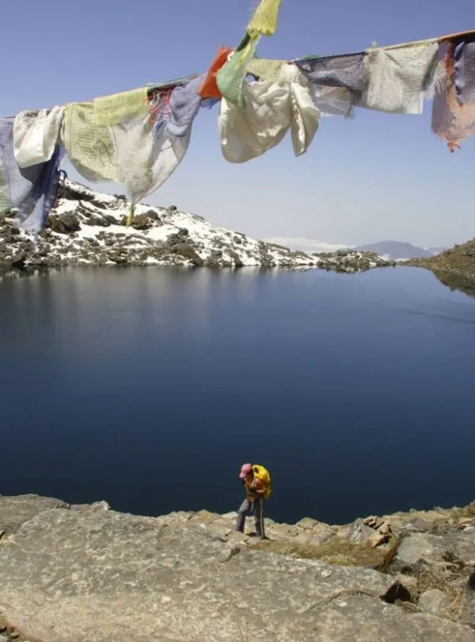
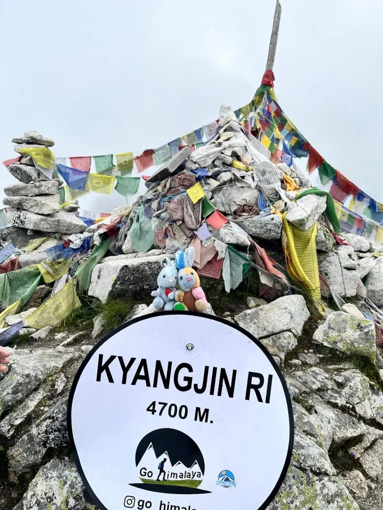

This 16-day Langtang, Gosaikunda, and Helambu trek is the most comprehensive and diverse circuit in Nepal! We climbed to Tserko Ri (5,033 m) above Kyanjin Gompa with panoramic glacier vistas, then traversed across to the sacred alpine waters of Gosaikunda, and crossed Lauribina La (4,610 m) into the green, forested Helambu valleys. Igloo Himalaya Treks managed this complex itinerary flawlessly — lodges, acclimatisation schedule, daily health checks, and delicious food throughout. Sagar is the finest guide in the Himalayas!
Langtang Region • Three-Region Traverse
Langtang–Gosaikunda–Helambu Trek — 16 Days
Walk along Langtang Valley to Kyanjin Gompa, visit Gosaikunda Lake and cross Lauribina La into Helambu on this sixteen-day guided trek.
5.0
reviews on TripAdvisor
5.0
169 reviews on Google

Travelers' Choice
Best of the Best 2026
Sacred Gosaikunda Lakes — 4,380m

Lauribina La Pass — 4,610m

Helambu Cultural Trail — 2,560m

Kyanjin Ri Panorama — 4,773m

Bhairav Kunda & Alpine Lakes
Key Trip Facts
Essential Expedition Specifications
Duration
16 Days
13 trekking days; Day 15 combines walking and driving
Difficulty
Moderate to Challenging
Consecutive walking days, steep climbs & high pass
Maximum Altitude
5,033 m / 16,512 ft
Optional Tserko Ri; Lauribina La pass 4,610 m
Destination
Nepal
Himalayan mountain Kingdom of Nepal
Activity
Trekking & Hiking
Glacial valley, holy lakes & Sherpa-Tamang ridge walking
Accommodation
Hotel & Teahouses
2 nights 3-star Kathmandu hotel + 13 teahouse nights
Transport
Private Vehicle
Kathmandu → Thulo Syabru & Melamchi → Kathmandu
Meals
All Included on Trek
Kathmandu breakfasts; B, L, D on trek + 3 hot drinks/day
Recommended Season
Spring & Autumn
March–May (Rhododendrons) & Sept–Nov (Clear skies)
Trek Starts
Thulo Syabru
Mountain village start point after scenic private drive
Trek Ends
Melamchi Area
Helambu roadhead with private vehicle pickup to Kathmandu
Trek Region
Langtang / Gosaikunda / Helambu
Langtang National Park & Helambu cultural basin
Package Start Point
Kathmandu
Airport pickup upon arrival at Tribhuvan International (KTM)
Package End Point
Kathmandu
Airport departure transfer for international flight home
Langtang Gosaikunda Helambu Trek Overview
Our sixteen-day Langtang Gosaikunda Helambu Trek links the upper Langtang Valley, Gosaikunda Lake and the villages of Helambu. Walk to Kyanjin Gompa, spend an acclimatisation day above the village and return via Lama Hotel before turning towards the lakes. The route then crosses Lauribina La at approximately 4,610 metres and continues into a different valley.
After driving to Thulo Syabru, descend towards the Langtang Khola following village paths and join the forest trail to Lama Hotel. The valley opens near Langtang Village, where rebuilt homes and teahouses sit beneath the mountains. Continue past grazing areas, mani walls and prayer wheels to Kyanjin Gompa. Two nights here allow an acclimatisation walk, with Kyanjin Ri or Tserko Ri considered according to health, weather and progress.
Returning via Lama Hotel, leave the main valley trail for Thulo Syabru. Forest climbs lead to Shing Gompa and then towards Gosaikunda, a lake sacred to Hindu and Buddhist communities. Spend a night near its shore before crossing Lauribina La. The following descent reaches Ghopte, where wooded slopes replace the rocky ground around the pass.
Helambu brings further village walking via Melamchigaon, Tarkeghyang and Shermathang. Monasteries, chortens and terraced fields add interest between forest sections, while the route still includes steep climbs and long descents. The acclimatisation day in Langtang provides adjustment time, but sleeping-height gains remain substantial. Good walking fitness, suitable clothing and attention to how you feel are important during the mountain journey.
You stay in teahouses during the trek and a hotel in Kathmandu. The sixteen-day programme covers arrival, valley walking, the lake and pass, return travel and international departure.
Langtang Gosaikunda Helambu Trek Highlights
Why Book the Langtang Gosaikunda Helambu Trek with Igloo Himalaya Treks?
We help you prepare in Kathmandu and support the journey across Langtang, Gosaikunda and Helambu. This package includes these arrangements.
Trek Briefing and Gear Check
Before leaving Kathmandu, we explain the programme, check your essential equipment and help with last-minute preparations. You can ask questions about the walking days, accommodation and what to carry.
Guide and Porter Support
Your package includes a licensed, English-speaking trekking guide and one porter per two trekkers. The guide leads the route and explains local places, while the porter carries your main trekking bag.
Equipment Provided for the Trek
We provide a sleeping bag, down jacket and duffel bag for use during the trek. All three must be returned afterwards. Check fit and condition before leaving Kathmandu for Thulo Syabru.
Communication When Plans Change
Road access, snowfall and conditions near Lauribina La can affect the schedule. Our team explains changes, discusses available options and confirms any additional accommodation or transport costs outside the services agreed beforehand.
Our sixteen-day itinerary combines Langtang Valley, a Kyanjin Gompa acclimatisation day, Gosaikunda and Helambu. Walking and driving times are approximate; weather, road access, trail conditions and the group's progress can affect the daily schedule.
DAY 01
Arrival in Kathmandu
Arrival & Transfer — Overnight in Kathmandu (1,400 m / 4,593 ft) — Trip Briefing & Preparation
Welcome to Nepal. Our representative meets you at Tribhuvan International Airport and transfers you to your hotel. After you settle in, we review the trekking programme, discuss the route and check equipment before departure for Thulo Syabru.
Depending on your arrival time, explore streets or rest after your flight. Keep your passport, insurance and trekking gear ready, and confirm tomorrow's road transfer before the journey into the Langtang region.
DAY 02
Drive from Kathmandu to Thulo Syabru
Scenic Mountain Drive — Overnight in Thulo Syabru (2,210 m / 7,251 ft) — 6–7 hrs Drive
DAY 03
Trek from Thulo Syabru to Lama Hotel
Valley & Forest Hike — Overnight at Lama Hotel (2,470 m / 8,104 ft) — 5–6 hrs Walk
DAY 04
Trek to Langtang Village
Ascent to Rebuilt Village — Overnight in Langtang Village (3,430 m / 11,253 ft) — 5–6 hrs Walk
DAY 05
Trek from Langtang Village to Kyanjin Gompa
Alpine Valley Trek — Overnight in Kyanjin Gompa (3,870 m / 12,697 ft) — 4–5 hrs Walk
DAY 06
Acclimatisation Hike to Kyanjin Ri or Tserko Ri
Acclimatisation Excursion — Overnight in Kyanjin Gompa (3,870 m) — Viewpoint Climb Kyanjin Ri (4,773 m) or Tserko Ri (5,033 m)
DAY 07
Trek Back to Lama Hotel
Descent Down Valley — Overnight at Lama Hotel (2,470 m / 8,104 ft) — 5–6 hrs Walk
DAY 08
Trek to Thulo Syabru
Lower Valley Crossing — Overnight in Thulo Syabru (2,210 m / 7,251 ft) — 5–6 hrs Walk
DAY 09
Trek to Shing Gompa
Forest Ridge Ascent — Overnight at Shing Gompa (3,300 m / 10,827 ft) — 4–5 hrs Walk
DAY 10
Trek to Gosaikunda Lake
Pilgrimage Lake Ascent — Overnight at Gosaikunda Lake (4,380 m / 14,370 ft) — 5–6 hrs Walk
DAY 11
Cross Lauribina La Pass and Descend to Ghopte
High Pass Crossing — Overnight in Ghopte (3,435 m / 11,270 ft) — Lauribina La (4,610 m), 6–8 hrs Walk
DAY 12
Trek to Melamchigaon
Forest Traverse & Descent — Overnight in Melamchigaon (2,560 m / 8,399 ft) — 6–7 hrs Walk
DAY 13
Trek to Tarkeghyang
Helambu Village Trail — Overnight in Tarkeghyang (2,595 m / 8,514 ft) — 5–6 hrs Walk
DAY 14
Trek to Shermathang
Sherpa Cultural Walk — Overnight in Shermathang (2,610 m / 8,563 ft) — 3–4 hrs Walk
DAY 15
Hike and Drive to Kathmandu via Melamchi
Hike & Return Drive — Overnight in Kathmandu (1,400 m / 4,593 ft) — 3–5 hrs Hike & 4–6 hrs Drive
DAY 16
Departure from Kathmandu
International Departure — Kathmandu (1,400 m) — Airport Transfer Home
Not satisfied with this Itinerary?
Are you interested on planning custom trip? It only takes 2 minutes.
What’s Included in the 16‑Day Langtang–Gosaikunda–Helambu Trek
Airport transfers
Pickup and drop-off for your arrival and departure in Kathmandu.
Ground transport
Private road transfers from Kathmandu to Thulo Syabru and from the Melamchi area to Kathmandu after trekking.
Accommodation
Two nights in a three-star Kathmandu hotel with breakfast, plus thirteen teahouse nights along the walking route between villages; room sharing and upgrades as quoted.
Meals
Breakfast in Kathmandu; breakfast, lunch and dinner during trekking; three cups of tea or coffee daily on trekking days, plus seasonal fruits when available. Confirm coverage on road days.
Guide and porter
A licensed, English-speaking guide and one porter assigned for every two trekkers.
Permits and entry fees
Langtang National Park entry, TIMS and required documentation for the full agreed trekking route.
Trekking equipment
Sleeping bag, down jacket and duffel bag supplied for use during the trip; all three returned after the trek.
First-aid supplies
First-aid kit and safety equipment carried by the trekking team.
Route preparation
A trekking map and briefing before your walking journey.
Trip extras
A completion certificate and a small token of appreciation after the trek.
What’s Not Included in the 16‑Day Langtang–Gosaikunda–Helambu Trek
International flights and Nepal visa
Airfare to and from Nepal and your visa fee.
Travel insurance
The cost of your policy, covering the full trekking route, treatment and emergency evacuation.
Emergency evacuation
Helicopter rescue, medical treatment and associated expenses; payment remains your or your insurer's responsibility.
Personal equipment
Boots, clothing and other personal items beyond the sleeping bag, down jacket and duffel bag we provide.
Extra food and drinks
Snacks, desserts, bottled water and drinks beyond the included meals, fruit and tea or coffee allowance.
Other Kathmandu meals
Lunches and dinners in the city beyond the included hotel breakfasts.
Teahouse services
Hot showers, Wi-Fi and device charging fees.
Guide and porter tips
Gratuities for the trekking team.
Additional accommodation or transport
Extra costs may apply when delays, itinerary changes or personal extensions require services outside the programme.
16‑Day Langtang–Gosaikunda–Helambu Trek Dates & Availability
Group Departures
If you would like to trek with other travellers, ask about upcoming group departures. We'll confirm the available dates, spaces and price for your chosen trekking programme.
04
OCT
Oct 04 – Oct 19, 2026
AVAILABLE$915 pp
18
OCT
Oct 18 – Nov 02, 2026
AVAILABLE$915 pp
What to Pack for the 17-Day Langtang, Gosaikunda and Helambu Trek
Pack layers for warmer walking days, cold mornings and evenings, and changing weather at higher elevations. Keep water, a warm layer, rain protection, medicines and valuables in your daypack. Use your main duffel for the rest of your belongings.
Hiking Gear
Footwear, daypack, trekking poles and trail essentials
Category Tip: Langtang and Helambu trails have many rocky paths and stone staircases; trekking poles help reduce knee strain on long descents.
Clothing
Moisture-wicking base layers, warm mid-layers and weather protection
Category Tip: Nights at Kyanjin Gompa and Gosaikunda drop below freezing; layering with quality thermals and fleece gives optimal temperature control.
Sleeping Equipment
Sleeping bag and personal comfort accessories
Category Tip: A four-season sleeping bag is provided for the high pass; an optional silk or fleece liner adds extra comfort and personal hygiene.
Toiletries & Hygiene
Personal hygiene, sun protection, skin care and first aid supplies
Category Tip: High alpine sun reflection is intense near sacred lakes and Lauribina La; reapply high-SPF sunscreen and lip balm regularly.
Electronics
Headlamp, power banks, camera and universal adapters
Category Tip: Device charging costs extra and cold air drains batteries quickly; keep your phone and power bank inside your sleeping bag at night.
Documents & Personal Items
Passports, permits, travel insurance, cash and emergency details
Category Tip: There are no ATMs beyond Kathmandu; withdraw all needed cash for hot showers, charging and drinks before departure.
Equipment Return & Valuables: A duffel bag is provided. The guide checks equipment before leaving Kathmandu. Return the sleeping bag, jacket and duffel afterwards; keep valuables in your daypack during trekking.
Trek Difficulty and Fitness
This route is physically demanding because of its length, steep climbs and high pass. Forest paths, stone steps and rocky ground feature along the journey. Most walking days take five to seven hours, with a longer outing possible at Tserko Ri and on the pass day.
Hill walking helps. First-time trekkers should build endurance and become comfortable with consecutive uphill and downhill days while carrying a daypack and layers.
Begin preparing around two to three months beforehand, allowing longer if you are starting from a low fitness level. Gradually combine regular walks, hill hikes and strength exercises. Practise in the boots you will wear on the trek.
Altitude and Acclimatisation
Two nights at Kyanjin Gompa provide additional time for an acclimatisation walk. Later climbs towards Shing Gompa and Gosaikunda still gain substantial sleeping height, requiring assessment before continuing higher.
Tell your guide immediately about headaches, nausea, dizziness or unusual fatigue. Do not continue to a higher sleeping altitude while experiencing symptoms of altitude illness. If symptoms worsen despite resting at the same elevation, descent is necessary. Crossing Lauribina La must remain secondary to your health.
Medical Conditions and Travel Insurance
If you have an existing medical condition, seek advice from a healthcare professional familiar with high-altitude travel before booking. Discuss your planned route and any medicines you take.
Travel insurance is compulsory for this package. Confirm cover for the entire route, including Lauribina La and your selected viewpoint. Allow up to 5,033 metres for Tserko Ri if planned, plus emergency evacuation and medical treatment. Check exclusions, excess charges and assistance procedures.
Accommodation and Room Facilities
Accommodation includes two nights in a three-star Kathmandu hotel and thirteen teahouse nights along the route. Room sharing arrangements, private-room availability and any upgrades are confirmed in your quotation before departure.
Teahouses usually provide simple bedrooms and shared bathrooms, with facilities varying between villages. Gosaikunda and Ghopte have more basic accommodation and cold nights. Bring personal toiletries and prepare for fewer services around the lake and pass crossing.
Food and Dietary Requirements
Breakfast, lunch and dinner are included during trekking. Teahouse menus commonly offer dal bhat, noodles, potatoes, soups and other straightforward teahouse meals.
Tell us about allergies or dietary requirements before booking so we can discuss what can be arranged along the route. Explain any strict requirements clearly, including concerns about shared cooking equipment.
Drinking Water
Carry reusable bottles and drink boiled or appropriately treated water. Water from a clear stream or untreated mountain tap may still contain germs.
Boiling is the most reliable way to kill germs. If boiling is unavailable, filtration followed by disinfection offers broader protection than many portable filters alone. Follow the instructions for your treatment equipment or tablets.
Guide and Porter Support
A licensed, English-speaking guide leads the route and explains local places. One porter serves two trekkers and carries agreed main luggage. You carry water, weather protection, medicines and valuables in your own daypack.
Showers, Charging and Communication
Hot showers, Wi-Fi and device charging cost extra, with availability varying between teahouses. Mobile reception and power supplies can be unreliable, especially around Gosaikunda, Ghopte and the pass. Carry a power bank and tell family that periods without reliable contact are possible during the trekking journey.
Permits and Documents
We arrange Langtang National Park entry, TIMS and required documentation for the agreed route. Carry your passport, insurance details and copies of important documents. Permit arrangements are confirmed before departure; your Nepal visa remains your responsibility.
Road Delays and Extra Time
Roadworks, traffic and landslides can affect the journeys to Thulo Syabru and from Melamchi. Snow or ice may change plans near Lauribina La Pass.
Allow flexibility before international departure. We return to Kathmandu on Day 15 without a buffer day. Extra nights or changed transport may cost more.
Altitude Profile of the 17-Day Langtang, Gosaikunda and Helambu Trek
Overnight stops rise from Langtang Village to Kyanjin Gompa, then drop via Lama Hotel and Thulo Syabru before climbing towards Gosaikunda. The lake is the highest sleeping point. The table separates overnight elevations from the viewpoints and Lauribina La, which you cross during the day.
Interactive elevation map showing daily gain and acclimatisation stopping points. Switch units below to convert between metres (m) and feet (ft).
Overnight Altitudes
Elevation BreakdownElevations are approximate and follow the overnight stops in our itinerary.
Higher Places You Visit
Key elevation milestones and daytime highlights along the route
Day 6 • Viewpoint Ridge
4,773 m
Kyanjin Ri
Around 4,773 m at the upper viewpoint, returning to Kyanjin Gompa.
Day 6 • Peak Ascent
5,033 m
Tserko Ri
Around 5,033 m if selected, with turnaround determined by health and conditions.
Day 10 • Sacred Alpine Lake
4,380 m
Gosaikunda Lake
Approximately 4,380 m, the highest overnight stop, before the following day's pass crossing.
Day 11 • High Alpine Pass
4,610 m
Lauribina La
Around 4,610 m, followed by the long descent to Ghopte overnight.
Acclimatisation & Pace Note: The repeated Kyanjin Gompa overnight represents an acclimatisation day. Your selected hike returns to the same teahouse, while later sleeping-height gains still need individual assessment.
Weather and Best Time for the 17-Day Langtang, Gosaikunda and Helambu Trek
Spring, from March to May, and autumn, from September to November, are generally the best seasons for this route. Forest trails and higher sections experience different conditions, with rain, cloud, cold or snowfall still possible, particularly around Kyanjin Gompa, Gosaikunda and Lauribina La Pass.
Find out the temperature ranges you will experience along the trail. Toggle between daily variation and monthly averages, and switch units below to convert between Celsius (°C) and Fahrenheit (°F).
Seasonal Weather Conditions
Year-Round Climate PatternsThese are seasonal patterns; conditions can vary from year to year and during an individual trek.
How Weather Changes Along the Route
Elevation gradients & trail exposureWalking along Langtang Valley and Helambu can feel warm in sunshine. Conditions become colder at Kyanjin Gompa, Gosaikunda and Lauribina La, particularly before sunrise, after sunset and in exposed areas.
During spring and autumn, nights near Gosaikunda can fall below freezing. Wind makes the pass feel colder, and snow can remain on sheltered ground. Carry warm layers, weather protection and suitable footwear for changing trail conditions during the trek.
Carry warm layers, sun protection, and reliable weather protection accessible in your daypack throughout the route.
Which Season Should You Choose?
Optimal timing for trek prioritiesChoose spring for warmer lower-valley days and flowering forest trails. Choose autumn, particularly October or November, if mountain visibility is your priority. Both require preparation for cold near the lake and pass.
Winter and monsoon need flexibility and local checks.
Contact our mountain team to check real-time trail conditions, lodge openings, and road access for your preferred travel window.
Langtang–Gosaikunda–Helambu Trek Route Map
Detailed topographic route map and elevation profile for the sixteen-day Langtang–Gosaikunda–Helambu grand Himalayan circuit. Trace the journey from Kathmandu via private vehicle to Thulo Syabru, ascending through the Langtang Khola forest gorge to Kyanjin Gompa (3,870 m) with viewpoints up to Tserko Ri (5,033 m), crossing over to Shing Gompa and the sacred alpine waters of Gosaikunda Lake (4,380 m), traversing the high Lauribina La Pass (4,610 m), and continuing through the Sherpa-Tamang cultural hamlets of Helambu—Melamchigaon, Tarkeghyang, and Shermathang—before returning to Kathmandu.
Langtang–Gosaikunda–Helambu Trek Reviews
4.9 / 5
(128+ Reviews)
Over 15,000 adventure seekers have explored Langtang, Gosaikunda, Helambu, Annapurna, and Everest with Igloo Himalaya Treks.

25 October

18 October

14 October

22 October

16-Day Langtang–Gosaikunda–Helambu Trek FAQs
Find clear answers regarding walking stages, high viewpoints, Lauribina La crossing, teahouses, and preparation for this 16-day grand Himalayan traverse.
Route & Viewpoints
Can I do this trek without previous trekking experience?
Previous hill walking helps because this programme combines consecutive trekking days, long descents and a high pass. First-time trekkers should prepare their endurance and discuss their background before booking. Technical climbing skills are unnecessary when conditions suit trekking.
What is the highest altitude on this itinerary?
Allow up to approximately 5,033 metres if choosing Tserko Ri. Upper Kyanjin Ri is around 4,773 metres, while Lauribina La reaches approximately 4,610 metres. Gosaikunda, around 4,380 metres, is the highest overnight stop on this itinerary.
Is Tserko Ri included in every trek departure?
Day 6 allows a selected acclimatisation walk from Kyanjin Gompa. Upper Kyanjin Ri and Tserko Ri are possible options, with different walking demands. The guide chooses the route and turnaround according to health, weather and progress.
Do we sleep beside sacred Gosaikunda Lake?
Yes. Day 10 ends in a simple mountain teahouse near Gosaikunda at approximately 4,380 metres. The following morning crosses Lauribina La before descending to Ghopte. Prepare for cold nights, shared facilities and simple accommodation around the lake and pass.
Is acclimatisation a complete rest day?
Day 6 includes a selected hike above Kyanjin Gompa followed by another night at the same teahouse. A shorter turnaround can be chosen. The purpose is adjustment time before the journey continues along the valley.
Is insurance covering only the pass height sufficient?
The optional viewpoint hike can go above Lauribina La's 4,610 metres. Ask your insurer to cover your full selected route, including Tserko Ri if planned, emergency helicopter evacuation and medical treatment. Confirm altitude limits, exclusions and assistance procedures.
Do I need to carry my main trekking bag?
One porter is shared between two trekkers and carries agreed main luggage. You carry your daypack with water, layers, medicines and daily essentials. Confirm the luggage allowance before departure and keep valuables with you always.
Do I need to bring a sleeping bag and down jacket?
We provide a sleeping bag, down jacket and duffel bag for use during the trek. All three must be returned afterwards. Bring personal boots, clothing, toiletries and electronics, and check equipment before departing Kathmandu for Thulo Syabru.
Can I book as a solo traveller?
The published starting rate for one person is USD 1,090. Send your dates to check group departures or private arrangements. The final quotation confirms availability, included services and any changes requested for your travel programme.
Does being fit protect me from altitude sickness?
Fitness helps with walking, but it does not prevent altitude illness. Fit and experienced trekkers can also become unwell. Follow the guide's assessment and report symptoms immediately, especially during the climbs towards Langtang Village, Shing Gompa and Gosaikunda.
What should I do if I feel unwell at altitude?
Tell your guide immediately about headaches, nausea, dizziness or unusual fatigue. Do not ascend to a higher sleeping altitude while experiencing symptoms of altitude illness. If symptoms worsen despite rest at the same elevation, descent is necessary.
How does this differ from the Langtang Valley Trek?
Both routes reach Kyanjin Gompa along the Langtang Valley. This sixteen-day trek adds Thulo Syabru, Shing Gompa, Gosaikunda and the Lauribina La crossing before continuing among Helambu villages. The extension adds a lake overnight, pass day and further village walking.
MORE ADVENTURES
You Might Also Like
If you prefer a shorter valley trek, a direct lake route or more village walking, consider these related Igloo packages.
 10 Days
10 Days
Langtang Valley Trek
Follow the forest walking approach via Lama Hotel and Langtang Village to Kyanjin Gompa, with time for mountain viewpoints. This shorter valley itinerary suits travellers who want village stays and walking beneath the Langtang peaks.
 6 Days
6 Days
Gosaikunda Trek
Approach Gosaikunda from Dhunche on a shorter lake itinerary, returning along the same trail. The compact ascent gains altitude quickly; compare its sleeping elevations, walking demands and preparation needs carefully before booking.
 14 Days
14 Days
Tamang Heritage Trail With Langtang Valley Trek
Walk via Gatlang, Tatopani, Thuman and Briddim before joining the Langtang Valley approach. The combined route continues to Kyanjin Gompa for viewpoint hikes, adding time in Tamang villages and a different cultural walking section before the upper valley.
14 Days
Yala Peak Climbing
Trek along Langtang Valley to Kyanjin Gompa before continuing higher to a supported base camp for a Yala Peak summit attempt. This package adds climbing instruction and equipment, with preparation for altitude and the longer climbing day.
Enquire about your preferred package for current prices and availability.